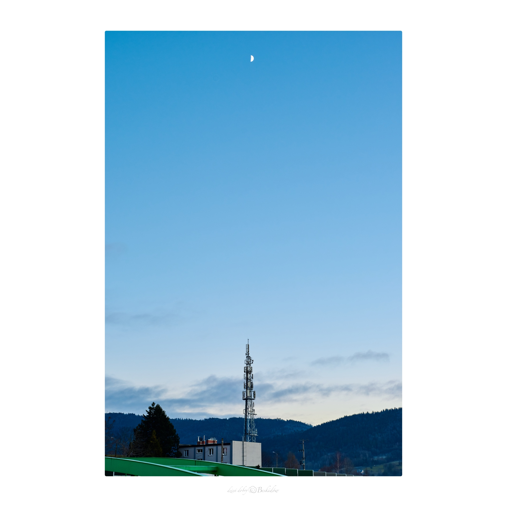
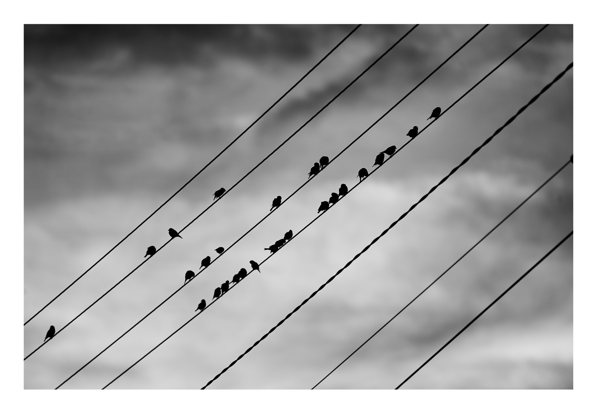

00 Fotografie
Fotografie
Czegokolwiek bym tutaj nie napisał, nie będzie to miało większego znaczenia :)

01 Analogos
Analogos
To mój osobisty projekt, stworzony z myślą o fotografii analogowej, ale nie tylko. Obejmuje również zdjęcia z aparatu FinePix S3 Pro, który pozwala na podobne doświadczenie — fotografowanie bez podglądu i plików RAW.
To powrót do pierwotnej radości z fotografii: konieczności czekania na rezultat i świadomego ograniczania się w momencie naciskania spustu migawki. Tak, aby mając mniej, starać się bardziej.
02 Krajobrazy
Krajobrazy
W obiektywie poszukuję ulotnych chwil i unikalnych perspektyw w Beskidach – moim miejscu na ziemi. To tu, w dobrze znanych zakątkach, staram się odnaleźć nowe spojrzenia na to, co zostało już niezliczoną ilość razy ukazane.
Moje kadry to moja wizja świata – próba uchwycenia jego piękna i spokoju w sposób, który jest dla mnie najbardziej osobisty.